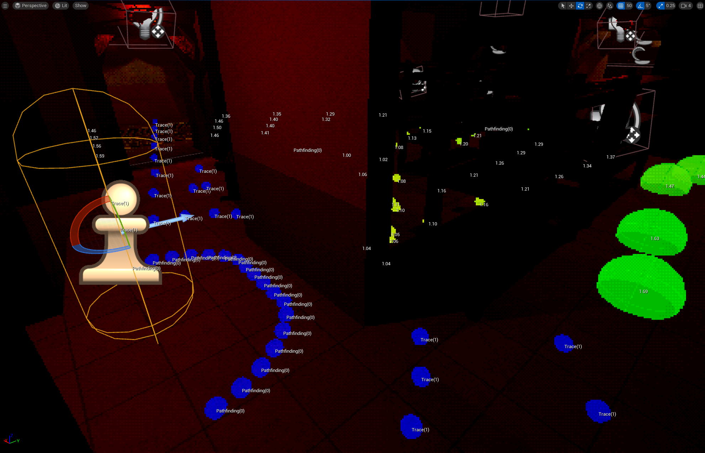
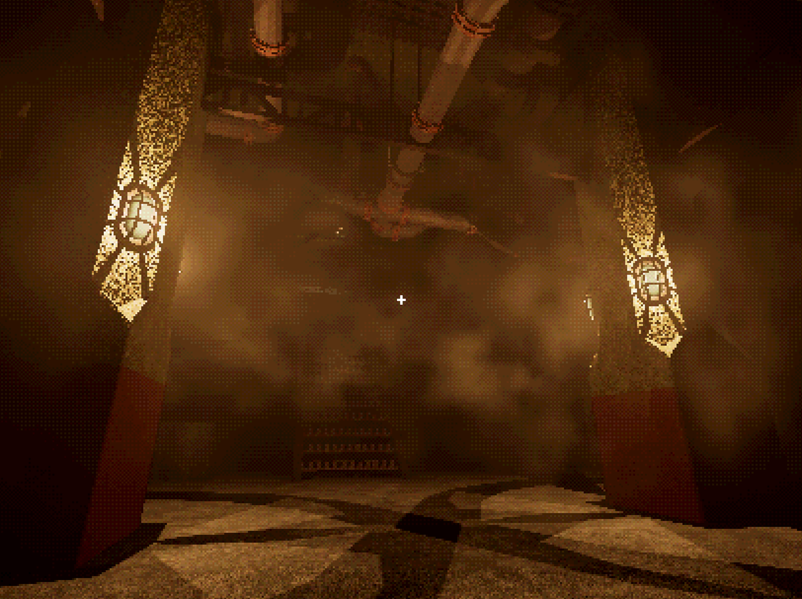

Unreal Engine Five - C++ Development - Key Features
Through this project, I have familiarised myself with Unreal Engine and practised using C++ for game development.
This involved the design, development and iteration of numerous game mechanics, made for ease of use by game/level designers within the editor.
Some key features of my UE5 development:
- Mechanic - 3D Interaction System
- Mechanic - Computer Terminal System
- Mechanic - AI - Environment Reactivity
- Utility - Level Design Tools
- Rendering - Dynamic Colour Quantisation and Dithering
These are the key features of my work in Unreal Engine 5, written in C++.
Mechanic - 3D Interaction System:
Key Features:
The interaction system allows for a player to observe, interact with and manipulate their environment using both their default camera view and a cursor.
This considers player input relative to where the object is held in 3D space, making for more immersive handling of doors, valves and more.
General Interaction:
Object interaction is built around a family of components that contain all needed interaction logic, for simple use by non-coders within the editor.
When an object falls under the reticule/cursor, it is highlighted for interaction, until a new object is found or the player looks away for long enough.
Objects may be "observed" to receive information, or interacted to carry out the logic of its interaction component.
This may be applied to anything from general scenery with observation messages, to moving parts like buttons on machinery.
Manipulating Moving Actors:
The system may be used to manipulate actors in the game world, gripping the object by a point in 3D space and translating mouse movement into a vector relative to this point, by which to apply force.
This works for both angular and direct movement, lending itself to all variety of objects from carefully opening doors to searching drawers.
Accurate Valve Movement:
The system also supports axel-based rotation for objects such as valves.
This is achieved by generating a vector tangential to the valve from the holding point, to tell if force is clockwise or anticlockwise.
Carrying and Placing Actors:
Objects may be picked up, moved and precisely placed through the interaction system.
The player can store objects in a "passive" position to free the cursor for manipulating the environment.
Both the reticule and cursor can be used to precisely place objects.
Mechanic - Computer Terminal System:
Click here for a technical overview
Key Features:
The terminal system allows the player to interact with a 3D terminal in the game-world to affect their environment.
This may be controlled through their own key inputs or a 3D keyboard in-game, using the cursor.
The system is able to find the exact incorrect parameter to report, if an entered command is invalid.
Otherwise, the command and its constituent parameters may be passed along for affecting the game-world.
The terminal may also use direction keys to traverse through the current line, or to recall previously entered commands.
To explain terminal functions, an interactive manual with moving 3D pages has been created, using the interaction system.
Mechanic - AI - Environment Reactivity:
Click here for a technical overview
Key Features:
Much work has gone into allowing an AI-controlled character to meaningfully interact with the environment. This has posed numerous challenges of how it should interact with objects designed for the player interaction system, and of general performance.
AI-Door Interaction:
To achieve AI-interaction with doors designed for the player interaction system, a larger setup was built around the door using navmesh modifiers and linkers.
These were then connected to the interaction component of the door with delegates, to alter the navmesh elements as the door moves.
Whilst an open door provides a clear passage in the navmesh, a sufficiently closed door will instead prompt a smart navlink event through which the AI throws the door open before passing.
This has proven sufficient in testing, after the addition of a collision volume to detect and knock the player away from a swung-open door, to avoid awkward physics interactions.
Through this, doors become an active element of player-AI interactions, closable as an obstacle and speedbump to a pursuing character.
Dynamic Obstacle-Navmesh Effects:
Further expanding on the player affecting AI behaviour, a combination of Navigation Query Filters and NavAreas affect how the AI navigates obstacles.
An obstacle may change its NavArea from that of an untouched obstacle, to a tampered one and then as it is fully cleared become default navmesh.
The AI may likewise use different Navigation Query Filters based on its current state, with rising disregard for obstacles.
Thus, a roaming AI will not touch untouched obstacles, and will at least try to find other ways past partial obstructions.
However, an AI searching for the source of a noise may happily break through an already damaged barrier in search of its tamperer.
An AI in pursuit of the player will break through any obstacle in their path.
Environment Query System Usage:
The Environment Query System has been used to improve the the AI's ability to search their environment.
If the AI has moved to investigate a sound and found no player, EQS is used to detect reachable locations that are currently not visible to the AI's sight.
This query is run in a forward facing cone, though if insufficient results are returned, the AI may turn to consider other search directions.
Additionally, the AI Sight Target Interface has been improved for the player character, which by default only checks against the center of the player capsule.
Utility - Level Design Tools:
Click here for a technical overview
Key Features:
As I began creating a proper level in which to use everything I've made, I began finding the need to streamline processes like setting up particle effects or adjusting stair meshes.
I created some tools to help greatly speed up these tasks, whilst also being intuitive for others to use.
Area Particle Effect Tools:
To rapidly set up fog effects throughout the level, I made a tool to easily adjust the parameters of a niagara system without delving into blueprints.
Volumes could be used to visually determine the area-of-effect within the editor, and then apply these volume bounds to the particle system without any trial and error process.
Instanced Mesh Stair Generation:
As I found issues with typical methods for creating and adjusting stair meshes in my level, I created a tool to generate and adjust stairs made from an instanced static mesh.
From this, step increments and positions can be easily adjusted to fill any gap. A ramp collision automatically fits the stairs, to provide smoother player collisions for movement.
Rendering - Dynamic Colour Quantisation and Dithering:
Click here for a technical overview
Key Features:
This rendering approach was developed to emulate older games, whilst retaining the ability to dynamically increase the quality of select objects or surfaces.
This is done through a combination of downsampling, colour quantisation and dithering, using custom stencil information to dynamically change properties.
The custom stencil value informs the shader how to manage the downsampling and the number of possible colour values from quantisation.
This allows for objects such as those locked in for interaction to become "in-focus" visually.
It also, importantly, allows for surfaces like book pages or a text-based terminal screen to remain legible whilst still matching their surroundings through a less constrained quantisation.